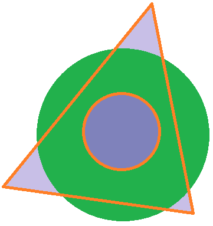

Prophets Card
The prophet card challenge presented me with a wireframe to match. After completing that challenge, I altered the project to become more responsive. Although the image will change well on a computer, it still has some limitations in regard to switching between devices. However, I really enjoyed this project. I learned a lot more about how to design a page after a wireframe. I also learned more about the elements that I need to use to make something more responsive. Overall, this was good practice for me in creating and designing something according to specifications.
Favorite Devo
My favorite devotional challenge encouraged me to play around with tables and forms. Although the forms are not operational, I learned a lot more about how I can format these elements on a web page. I can foresee these elements being useful in various website applications. I hope to learn more about forms in the future and how I can add the information from them to a table.
Halloween CSS
The Halloween decoration challenge was a ton of fun. With a theme in mind, I took an html page and designed it to match a Halloween style. This was a little different from designing from a wireframe, where I would be matching specifications. Instead, it allowed me to be more creative and imaginative in my design. I think practicing this way will help me know what's possible on my web pages. I also learned more about centering text on an image, like as displayed at the top of this page. I also learned more about text shadow, which is applied to the headings. This assignment has taught me that there are a bunch of CSS elements that I don't know about, which I will need to continue to become more familiar with.